Probability and Statistics
Table of Contents
Probability and Statistics on Lagunita
1 DONE Introduction
In a nutshell, what statistics is all about is converting data into useful information.

Figure 1: Big Picture of Statistics
2 IN-PROGRESS Exploratory Data Analysis
2.1 DONE Examining Distribution
2.1.1 DONE Overview
- Data and Variables
Data are pieces of information about individuals organized into variables. By an individual, we mean a particular person or object. By a variable, we mean a particular characteristic of the individual.
A dataset is a set of data identified with particular circumstances. Datasets are typically displayed in tables, in which rows represent individuals and columns represent variables.
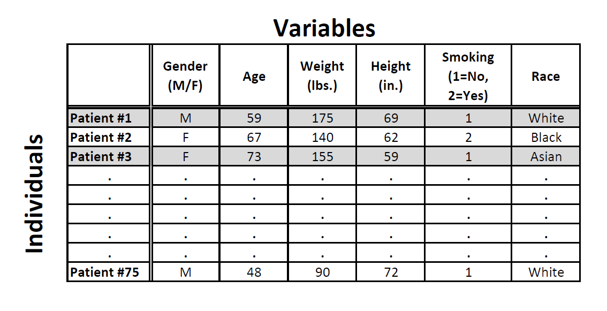
Figure 2: Medical records from a particular survey
Variables can be classified into one of two types: categorical or quantitative.
- Categorical variables take category or label values and place an individual into one of several groups. Each observation can be placed in only one category, and the categories are mutually exclusive.
- Quantitative variables take numerical values and represent some kind of measurement.
Note: Categorical variables are sometimes called qualitative variables, but in this course we use the term categorical.
- Scale of Measurement
Previously, a simple distinction was made between quantitative and categorical variables. However, there is a more precise method of categorizing variables: it is called scale of measurement. The four different scales of measurement, from least to most precise, are
- Nominal
- Ordinal
- Interval
- Ratio
Nominal Variables
- It only indicates differences and uses discrete categories to describe qualitative differences.
- Examples
- Types of pets (birds, fish, cats, dogs)
- Gender (male, female, transgender)
- Eye color (blue, green, brown, hazel)
- Type of house (bungalow, duplex, ranch)
- Type of resident (homeowner, renter)
Ordinal Variables
- It is more precise than nominal data as the differences can now be rank-orders. However, it does not indicate the difference between two numbers are fixed or equal.
- An ordinal variable is a categorical variable for which the possible values are ordered. Ordinal variables can be considered “in between” categorical and quantitative variables.
- Examples
- Order of finishes in a race
- Educational level:
- Elementary school education
- High school graduate
- Some college
- College graduate
- Graduate degree
- Survey question responses: “My general health is …”
- Poor
- Reasonable
- Good
- Excellent
Interval Variables
- It takes numerical forms and the distance between pairs of consecutive numbers is assumed to be equal.
- However, interval variables do not have a meaningful zero point.
- Examples
- Temperature in Celsius
- IQ scores
- SAT scores
Ratio Variables
- It is like the interval data plus a meaningful zero point.
- Examples
- Age
- Height
- Weight
- Cost of a car, in dollars
More precise level of measurement can be converted to a less precise level of measurement.
Age in years is a ratio variable and can be scaled into an ordinal variable of age groups, which can include toddler, adolescent, young adulthood, and middle age.
Less precise data cannot be made into more precise data.
In order to convert these raw data into useful information we need to summarize and then examine the distribution of the variable. By distribution of a variable, we mean:
- what values the variables takes, and
- how often the variable takes those values.
2.1.3 DONE One Quantitative Variable: Graphs
To display data from one quantitative variable graphically, we can use either the histogram or the stemplot. (Another graph, the boxplot, will be covered in another section).
- Histogram: Intervals
Break the range of values into intervals and count how many observations fall into each interval.
Here are the exam grades of 15 students:
88, 48, 60, 51, 57, 85, 69, 75, 97, 72, 71, 79, 65, 63, 73
We first need to break the range of values into intervals (also called “bins” or “classes”). In this case, since our dataset consists of exam scores, it will make sense to choose intervals that typically correspond to the range of a letter grade, 10 points wide: 40-50, 50-60, …, 90-100. By counting how many of the 15 observations fall in each of the intervals, we get the following table:
Table 1: Exam Grades Score Count [40-50) 1 [50-60) 2 [60-70) 4 [70-80) 5 [80-90) 2 [90-100] 1 To construct the histogram from this table we plot the intervals on the X-axis, and show the number of observations in each interval (frequency of the interval) on the Y-axis, which is represented by the height of a rectangle located above the interval:
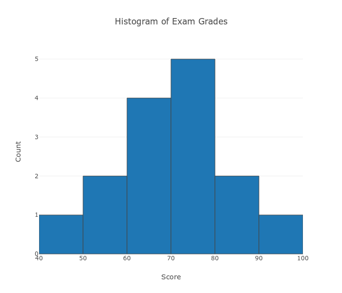
The table above can also be turned into a relative frequency table.
Table 2: Exam Grades with relative frequency Score Count Relative Frequency [40-50) 1 0.07 [50-60) 2 0.13 [60-70) 4 0.27 [70-80) 5 0.33 [80-90) 2 0.13 [90-100] 1 0.07 Total 15 A relative frequency table, like the one above, can be used to determine the frequency of scores occurring at or across intervals.
- Histogram: Shape
Once the distribution has been displayed graphically, we can describe the overall pattern of the distribution and mention any striking deviations from that pattern. More specifically, we should consider the following features of the distribution:
- Overall pattern
- Shape
- Center
- Spread
- deviations from the pattern
- Outliers
When describing the shape of a distribution, we should consider:
- Symmetry/skewness of the distribution.
- Peakedness (modality)—the number of peaks (modes) the distribution has.
We distinguish between:
Symmetric distributions


Note that all three distributions are symmetric, but are different in their modality (peakedness). The first distribution is unimodal—it has one mode (roughly at 10) around which the observations are concentrated. The second distribution is bimodal—it has two modes (roughly at 10 and 20) around which the observations are concentrated. The third distribution is kind of flat, or uniform. The distribution has no modes, or no value around which the observations are concentrated. Rather, we see that the observations are roughly uniformly distributed among the different values.
Skewed right distributions

A distribution is called skewed right if, as in the histogram above, the right tail (larger values) is much longer than the left tail (small values). Note that in a skewed right distribution, the bulk of the observations are small/medium, with a few observations that are much larger than the rest. An example of a real-life variable that has a skewed right distribution is salary. Most people earn in the low/medium range of salaries, with a few exceptions (CEOs, professional athletes etc.) that are distributed along a large range (long “tail”) of higher values.
Skewed left distributions

A distribution is called skewed left if, as in the histogram above, the left tail (smaller values) is much longer than the right tail (larger values). Note that in a skewed left distribution, the bulk of the observations are medium/large, with a few observations that are much smaller than the rest. An example of a real life variable that has a skewed left distribution is age of death from natural causes (heart disease, cancer etc.). Most such deaths happen at older ages, with fewer cases happening at younger ages.
Comments:
Note that skewed distributions can also be bimodal. Here is an example. A medium size neighborhood 24-hour convenience store collected data from 537 customers on the amount of money spend in a single visit to the store. The following histogram displays the data.

Note that the overall shape of the distribution is skewed to the right with a clear mode around $25. In addition it has another (smaller) “peak” (mode) around $50-55. The majority of the customers spend around $25 but there is a cluster of customers who enter the store and spend around $50-55.
- If a distribution has more than two modes, we say that the distribution is multimodal.
The distribution for exam grades is roughly symmetric.
- Overall pattern
- Histogram: Center, Spread, & Outliers
Center
- The center of the distribution is its midpoint—the value that divides the distribution so that approximately half the observations take smaller values, and approximately half the observations take larger values. Note that from looking at the histogram we can get only a rough estimate for the center of the distribution.
Spread
- The spread (also called variability) of the distribution can be described by the approximate range covered by the data. From looking at the histogram, we can approximate the smallest observation (min), and the largest observation (max), and thus approximate the range.
Outliers
Outliers are observations that fall outside the overall pattern. For example, the following histogram represents a distribution that has a high probable outlier:

- Stemplot
The stemplot (also called stem and leaf plot) is another graphical display of the distribution of quantitative data.
Separate each data point into a stem and leaf, as follows:
- The leaf is the right-most digit.
- The stem is everything except the right-most digit.
- So, if the data point is 34, then 3 is the stem and 4 is the leaf.
- If the data point is 3.41, then 3.4 is the stem and 1 is the leaf.
To make a stemplot:
- Separate each observation into a stem and a leaf.
- Write the stems in a vertical column with the smallest at the top, and draw a vertical line at the right of this column.
- Go through the data points, and write each leaf in the row to the right of its stem.
- Rearrange the leaves in an increasing order.
When some of the stems hold a large number of leaves, we can split each stem into two: one holding the leaves 0-4, and the other holding the leaves 5-9. A statistical software package will often do the splitting for you, when appropriate.
actress = c(34, 34, 27, 37, 42, 41, 36, 32, 41, 33, 31, 74, 33, 49, 38, 61, 21, 41, 26, 80, 42, 29, 33, 36, 45, 49, 39, 34, 26, 25, 33, 35, 35, 28, 30, 29, 61, 32, 33, 45, 29, 62, 22, 44) stem(actress)
The decimal point is 1 digit(s) to the right of the | 2 | 1256678999 3 | 0122333334445566789 4 | 1112245599 5 | 6 | 112 7 | 4 8 | 0
Note that when rotated 90 degrees counterclockwise, the stemplot visually resembles a histogram.
This orientation makes the right-skewness of the distribution clearly visible.
The stemplot has additional unique features:
- It preserves the original data.
- It sorts the data (which will become very useful in the next section).
Dotplot
- There is another type of display that we can use to summarize a
p quantitative variable graphically—the dotplot. The dotplot, like the stemplot, shows each observation, but displays it with a dot rather than with its actual value. Here is the dotplot for the ages of Best Actress Oscar winners.
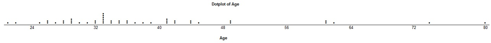
2.1.4 DONE One Quantitative Variable: Measures of Center
The three main numerical measures for the center of a distribution are the mode, the mean and the median. Each one of these measures is based on a completely different idea of describing the center of a distribution. We will first present each one of the measures, and then compare their properties.
- Mode
So far, when we looked at the shape of the distribution, we identified the mode as the value where the distribution has a “peak” and saw examples when distributions have one mode (unimodal distributions) or two modes (bimodal distributions). In other words, so far we identified the mode visually from the histogram.
Technically, the mode is the most commonly occurring value in a distribution. For simple datasets where the frequency of each value is available or easily determined, the value that occurs with the highest frequency is the mode.
hrs = c(1, 6, 7, 5, 5, 8, 11, 12, 15) table(hrs)
1 1 5 2 6 1 7 1 8 1 11 1 12 1 15 1 - Mean
The mean is the average of a set of observations (i.e., the sum of the observations divided by the number of observations). If the n observations are \(x_1, x_2, \dotsc, x_n\), their mean, which we denote by \(\bar{x}\), is therefore \(\bar{x} = (x_1 + x_2 + \dotsb + x_n) / n\).
mean(hrs)
7.77777777777778
hrs2 = rep(c(1, 2, 3, 4, 5, 6, 7, 8, 9), c(3, 5, 15, 25, 20, 15, 5, 1, 1)) mean(hrs2)4.44444444444444
- Median
The median \(M\) is the midpoint of the distribution. It is the number such that half of the observations fall above, and half fall below. To find the median:
- Order the data from smallest to largest.
- Consider whether \(n\), the number of observations, is even or odd.
- If \(n\) is odd, the median \(M\) is the center observation in the ordered list. This observation is the one “sitting” in the \((n + 1) / 2\) spot in the ordered list.
- If \(n\) is even, the median \(M\) is the mean of the two center observations in the ordered list. These two observations are the ones “sitting” in the \(n / 2\) and \(n / 2 + 1\) spots in the ordered list.
median(actress)
34.5
median(hrs)
7
pamphlets = rep(c(6, 7, 8, 9, 10, 11, 12, 13, 14, 15, 16), c(3, 3, 8, 4, 1, 1, 4, 2, 1, 2, 1)) median(pamphlets)9
- Comparing Mean and Median
As we have seen, mean and the median, two of the common measures of center, each describe the center of a distribution of values in a different way. The mean describes the center as an average value, in which the actual values of the data points play an important role. The median, on the other hand, locates the middle value as the center, and the order of the data is the key to finding it.
The mean is very sensitive to outliers (because it factors in their magnitude), while the median is resistant to outliers.
- For symmetric distributions with no outliers: \(\bar{x}\) is approximately equal to \(M\).
- For skewed right distributions and/or datasets with high outliers, \(\bar{x} > M\).
- For skewed left distributions and/or datasets with low outliers, \(\bar{x} < M\).
We will therefore use \(\bar{x}\) as a measure of center for symmetric distributions with no outliers. Otherwise, the median will be a more appropriate measure of the center of our data.
A description of a distribution almost always includes a measure of its center or average. The two common measures of center are the mean and the median.
2.1.5 DONE One Quantitative Variable: Measures of Spread
- Introduction
So far we have learned about different ways to quantify the center of a distribution. A measure of center by itself is not enough, though, to describe a distribution. Consider the following two distributions of exam scores. Both distributions are centered at 70 (the median of both distributions is approximately 70), but the distributions are quite different. The first distribution has a much larger variability in scores compared to the second one.
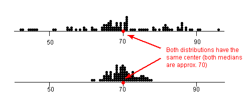
In order to describe the distribution, we therefore need to supplement the graphical display not only with a measure of center, but also with a measure of the variability (or spread) of the distribution.
In this section, we will discuss the three most commonly used measures of spread:
- Range
- Inter-quartile range (IQR)
- Standard deviation
Like the different measures of center, these measures provide different ways to quantify the variability of the distribution.
- Range
The range covered by the data is the most intuitive measure of variability. The range is exactly the distance between the smallest data point (min) and the largest one (max).
- range = max − min
max(actress) - min(actress)
59
- Inter-Quartile Range (IQR)
While the range quantifies the variability by looking at the range covered by all the data, the IQR measures the variability of a distribution by giving us the range covered by the middle 50% of the data.
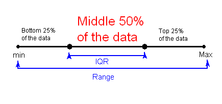
Here is how the IQR is actually found:
Arrange the data in increasing order, and find the median M. Recall that the median divides the data, so that 50% of the data points are below the median, and 50% of the data points are above the median.
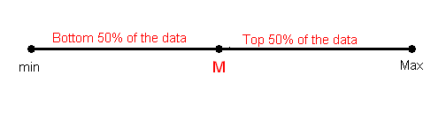
Find the median of the lower 50% of the data. This is called the first quartile of the distribution, and the point is denoted by Q1. Note from the picture that Q1 divides the lower 50% of the data into two halves, containing 25% of the data points in each half. Q1 is called the first quartile, since one quarter of the data points fall below it.
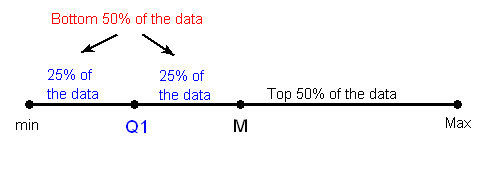
Repeat this again for the top 50% of the data. Find the median of the top 50% of the data. This point is called the third quartile of the distribution, and is denoted by Q3. Note from the picture that Q3 divides the top 50% of the data into two halves, with 25% of the data points in each. Q3 is called the third quartile, since three quarters of the data points fall below it.
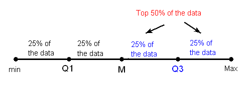
The middle 50% of the data falls between Q1 and Q3, and therefore IQR = Q3 − Q1.

We can define a bit more precisely what is considered the bottom or top 50% of the data. The bottom (top) 50% of the data is all the observations whose position in the ordered list is to the left (right) of the location of the overall median M.
Note that when n is odd, the median is not included in either the bottom or top half of the data; when n is even, the data are naturally divided into two halves.
- Using the IQR to Detect Outliers
So far we have quantified the idea of center, and we are in the middle of the discussion about measuring spread, but we haven’t really talked about a method or rule that will help us classify extreme observations as outliers. The IQR is used as the basis for a rule of thumb for identifying outliers.
The 1.5(IQR) criterion for outliers is often used.
An observation is considered a suspected outlier if it is:
- below Q1 − 1.5(IQR) or
- above Q3 + 1.5(IQR)
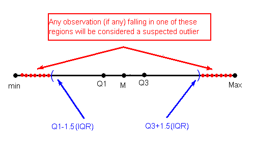
- Understanding Outliers
We just practiced one way to ’flag’ possible outliers. Why is it important to identify possible outliers, and how should they be dealt with? The answers to these questions depend on the reasons for the outlying values. Here are several possibilities:
- Even though it is an extreme value, if an outlier can be understood to have been produced by essentially the same sort of physical or biological process as the rest of the data, and if such extreme values are expected to eventually occur again, then such an outlier indicates something important and interesting about the process you’re investigating, and it should be kept in the data.
- If an outlier can be explained to have been produced under fundamentally different conditions from the rest of the data (or by a fundamentally different process), such an outlier can be removed from the data if your goal is to investigate only the process that produced the rest of the data.
- An outlier might indicate a mistake in the data (like a typo, or a measuring error), in which case it should be corrected if possible or else removed from the data before calculating summary statistics or making inferences from the data (and the reason for the mistake should be investigated).
Handling outliers properly helps us better see the patterns in the data.
- The Five Number Summary
The combination of all five numbers (min, Q1, M, Q3, Max) is called the five number summary, and provides a quick numerical description of both the center and spread of a distribution.
load("actor_2013.RData") summary(actor_age$Age)Min. 1st Qu. Median Mean 3rd Qu. Max. 29.00 38.00 43.50 44.98 50.25 76.00
fivenum(actor_age$Age)
29 38 43.5 50.5 76 mean(actor_age$Age)
44.9772727272727
sd(actor_age$Age)
9.7491529420089
var(actor_age$Age)
95.0459830866808
median(actor_age$Age)
43.5
IQR(actor_age$Age)
12.25
min(actor_age$Age)
29
max(actor_age$Age)
76
length(actor_age$Age)
44
quantile(actor_age$Age, 0.25)
38
quantile(actor_age$Age, 0.75)
50.25
- Constructing a Boxplot
The boxplot graphically represents the distribution of a quantitative variable by visually displaying the five-number summary and any observation that was classified as a suspected outlier using the 1.5(IQR) criterion.
boxplot(actress, actor_age$Age, names=c("Actress", "Actor"), xlab="Gender", ylab="Age", main="Best Actress/Actor Oscar Winners")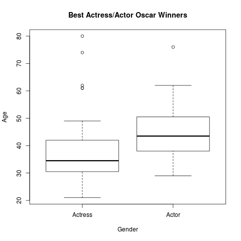
load("graduation.RData") summary(grad_data)College.A College.B College.C College.D Min. :43.20 Min. :67.30 Min. :54.50 Min. :74.10 1st Qu.:50.95 1st Qu.:69.55 1st Qu.:56.58 1st Qu.:76.65 Median :63.75 Median :70.15 Median :67.65 Median :79.00 Mean :60.96 Mean :71.29 Mean :65.17 Mean :79.11 3rd Qu.:70.50 3rd Qu.:73.05 3rd Qu.:71.58 3rd Qu.:81.10 Max. :73.80 Max. :76.70 Max. :74.80 Max. :84.60 College.E College.F Min. :54.50 Min. :57.70 1st Qu.:56.88 1st Qu.:65.05 Median :59.15 Median :72.00 Mean :60.77 Mean :72.78 3rd Qu.:63.70 3rd Qu.:81.28 Max. :71.30 Max. :87.40
boxplot(grad_data, xlab="Colleges", ylab ="Graduation Rates", main="Comparison of Graduation Rates")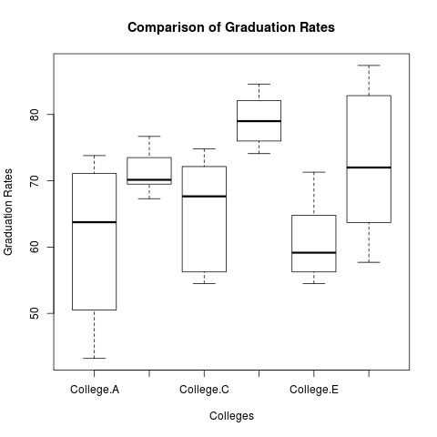
boxplot(grad_data, horizontal=TRUE, ylab="Colleges", xlab ="Graduation Rates", main="Comparison of Graduation Rates")
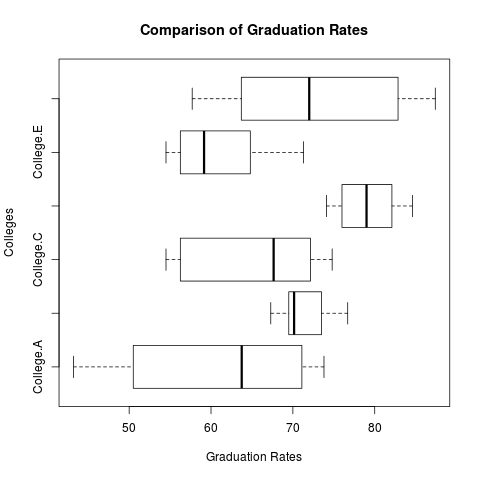
- Standard Deviation
So far, we have introduced two measures of spread; the range (covered by all the data) and the inter-quartile range (IQR), which looks at the range covered by the middle 50% of the distribution. We also noted that the IQR should be paired as a measure of spread with the median as a measure of center. We now move on to another measure of spread, the standard deviation, which quantifies the spread of a distribution in a completely different way.
The idea behind the standard deviation is to quantify the spread of a distribution by measuring how far the observations are from their mean, \(\bar{x}\). The standard deviation gives the average (or typical distance) between a data point and the mean, \(\bar{x}\).
There are many notations for the standard deviation: SD, s, Sd, StDev. Here, we’ll use SD as an abbreviation for standard deviation, and use s as the symbol.
Variance is defined as the sum of squares of difference between each observation and the mean, divided by \(n-1\). \[ \DeclareMathOperator{\Var}{Var} \Var = \left(\sum_{x \in X} x-\bar{x}\right) /\ (n-1) \]
the reason why we “sort of” average the square deviations (divide by \(n-1\)) rather than take the actual average (divide by \(n\)) is beyond the scope of the course at this point, but will be addressed later.
The SD is the square root of the variance. \[ s = \sqrt{ \left(\sum_{x \in X} x-\bar{x}\right) /\ (n-1) } \]
The importance of the numerical figure variance will be discussed much later in the course when we get to the inference part.
It should be clear from the discussion thus far that the SD should be paired as a measure of spread with the mean as a measure of center.
Note that the only way, mathematically, in which the SD = 0, is when all the observations have the same value (Ex: 5, 5, 5, … , 5), in which case, the deviations from the mean (which is also 5) are all 0.
It should be clear from the discussion thus far that the SD should be paired as a measure of spread with the mean as a measure of center.
Use \(\bar{x}\) (the mean) and the standard deviation as measures of center and spread only for reasonably symmetric distributions with no outliers.
Use the five-number summary (which gives the median, IQR and range) for all other cases.
load("sdintuition.RData") sapply(ratings, sd)1.56892908110547 4 2.63117405792109 - The Standard Deviation Rule
The rule that we are about to present, called “The Standard Deviation Rule” (also known as “The Empirical Rule”) will hopefully also contribute to building our intuition about this concept.
Consider a symmetric mound-shaped distribution.

For distributions having this shape (also known as the normal shape), the following Standard Deviation Rule applies:
- Approximately 68% of the observations fall within 1 standard deviation of the mean.
- Approximately 95% of the observations fall within 2 standard deviations of the mean.
- Approximately 99.7% (or virtually all) of the observations fall within 3 standard deviations of the mean.
The following picture illustrates this rule.

2.2 IN-PROGRESS Examining Relationship
2.2.1 DONE Overview
In most studies involving two variables, each of the variables has a role. We distinguish between:
- the explanatory variable (also commonly referred to as the independent variable)—the variable that claims to explain, predict or affect the response—and
- the response variable (also commonly referred to as the dependent variable)—the outcome of the study.
Typically the explanatory (or independent) variable is denoted by X, while the response (or dependent) variable is denoted by Y.
If we further classify each of the two relevant variables according to type (categorical or quantitative), we get the following 4 possibilities for “role-type classification”:
- Categorical explanatory and quantitative response
- Categorical explanatory and categorical response
- Quantitative explanatory and quantitative response
- Quantitative explanatory and categorical response
This role-type classification can be summarized and easily visualized in the following table (note that the explanatory variable is always listed first):
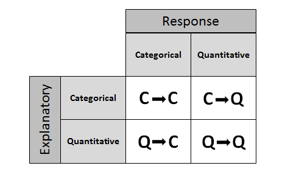
Principle
When confronted with a research question that involves exploring the relationship between two variables, the first and most crucial step is to determine which of the 4 cases represents the data structure of the problem. In other words, the first step should be classifying the two relevant variables according to their role and type, and only then can we determine what statistical tools should be used to analyze them.
2.2.2 DONE Case C → Q
2.2.3 DONE Case C → C
load("nightlight.RData")
t = table(nightlight)
t
Nearsightedness
Light No Yes
lamp 34 41
night light 153 79
no light 155 17
prop.table(t, 1)
Nearsightedness
Light No Yes
lamp 0.45333333 0.54666667
night light 0.65948276 0.34051724
no light 0.90116279 0.09883721
prop.table(t, 2)
Nearsightedness
Light No Yes
lamp 0.0994152 0.2992701
night light 0.4473684 0.5766423
no light 0.4532164 0.1240876
prop.table(t, 1) * 100
Nearsightedness
Light No Yes
lamp 45.333333 54.666667
night light 65.948276 34.051724
no light 90.116279 9.883721
2.2.4 IN-PROGRESS Case Q → Q: Scatterplots
load("height.RData") plot(h$height, h$weight, xlab="Height (inches)", ylab="Weight (lbs)")
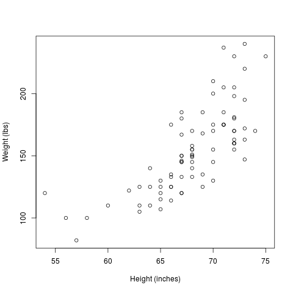
plot(h$height, h$weight, xlab="Height (inches)", ylab="Weight (lbs)", type="n") points(h$height[h$gender==0], h$weight[h$gender==0], col="blue") points(h$height[h$gender==1], h$weight[h$gender==1], col="red") legend(55, 235, pch=1, col=c("blue", "red"), legend=c("males", "females"))
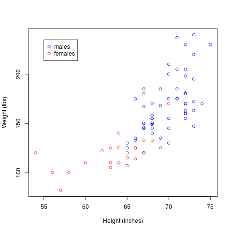